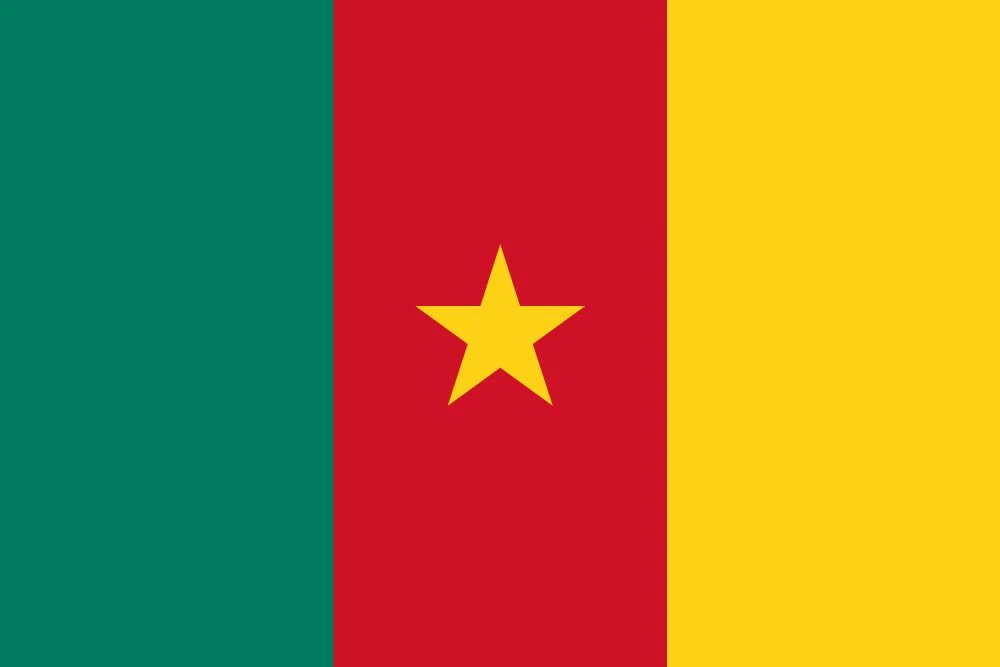

1. West Germany’s Triumph: A Third Star in Rome
The sun beat down on Rome’s Stadio Olimpico on July 8, 1990, as 73,603 spectators gathered for the highly anticipated World Cup final. On one side stood West Germany, chasing their third World Cup title. On the other, Argentina, the defending champions from 1986, led by the talismanic Diego Maradona, looking to defend their crown. This was not just a battle for football supremacy; it was a clash of two footballing giants, both desperate to carve their names in history.
The match was a tense, grinding affair. For 85 minutes, neither team could break the deadlock. West Germany, orchestrated by the brilliant Lothar Matthäus in midfield, dominated possession and controlled the tempo, but they couldn’t find a way through Argentina’s resolute defense. Meanwhile, Maradona, his ankle heavily strapped and clearly not at his best, battled valiantly to inspire his side. Yet the magic of his 1986 self was nowhere to be seen as he struggled to lift Argentina’s game.
The match took a dramatic turn in the 85th minute. A foul on Jürgen Klinsmann in the penalty area handed West Germany a golden opportunity. Andreas Brehme, calm as ever, stepped up to take the spot kick. The tension was palpable. In a moment of pure composure, Brehme slotted the ball past Argentine keeper Sergio Goycochea to give West Germany the lead. The stadium erupted as the final goal of the match was scored. Argentina, already down to 10 men after Pedro Monzón’s red card in the 65th minute and now reduced to nine with Gustavo Dezotti’s dismissal just minutes before the penalty, had no response. The dream of retaining the title was over. West Germany had done it.
Brehme’s penalty proved to be the dagger, but it was a culmination of West Germany’s masterclass throughout the tournament. From the group stages, where they dispatched Yugoslavia 4-1, UAE 5-1, and drew 1-1 with Colombia, to the knockout rounds, where they edged past the Netherlands (2-1), Czechoslovakia (1-0), and England (4-3 in penalties after a 1-1 draw), this was a team that oozed efficiency and grit. They weren’t always the flashiest team, but they were always effective.
The final was another testament to West Germany’s resilience. They didn’t need to be spectacular—they just needed to be solid, and they were. While Argentina had their moments, the match was a reflection of West Germany’s strength, composure, and discipline. Matthäus was a dominant force in midfield, controlling the rhythm of the game, while Bodo Illgner’s saves kept Argentina at bay. West Germany’s 52% possession and nine shots on goal compared to Argentina’s seven reflected their tactical edge.
As Matthäus lifted the trophy, sweat dripping down his face, he declared, “We earned it.” For manager Franz Beckenbauer, it was the culmination of years of hard work. He grinned and said, “This is for the lads, every one of ‘em.” His team had done what many thought impossible—defeating Argentina and claiming their third World Cup title.
In Germany, celebrations erupted. The victory was even more poignant, as it marked the last World Cup for West Germany before reunification. The country’s unity would soon follow, but for now, they could bask in the glory of their triumph. Berlin partied well into the night as Matthäus, Klinsmann, and their teammates were hailed as heroes.
The legacy of this victory is forever etched in the history of the World Cup. West Germany’s third star symbolized not just a team at the peak of their powers, but also a nation’s pride and resilience. For Matthäus, Klinsmann, and their comrades, this was their moment of glory.
In the end, the final was a tense affair, with Brehme’s penalty becoming the iconic moment that defined a generation of German football. West Germany’s dominance in the tournament was undeniable, and their third title was a fitting conclusion to a remarkable journey. The tournament wasn’t just about the triumph; it was about the way they did it—resilient, disciplined, and with a touch of class. West Germany’s 1990 victory remains a testament to football’s power to inspire and unite.

2. Maradona’s Tears: The Heartbreak of Argentina
July 8, 1990, will forever be remembered as a day when Diego Maradona’s dreams of a second World Cup title shattered in Rome’s Stadio Olimpico. The Argentine legend, battling injury and frustration, stood on the verge of his final attempt to lead his nation to glory. For 85 minutes, the match seemed to be drifting into a tense stalemate. Argentina, who had fought through the tournament with grit and passion, were on the brink of making it to another World Cup final victory. But the football gods had other plans.
Argentina’s path to the final had been far from easy. They had scraped through the group stages with mixed results: a shocking 1-0 loss to Cameroon, followed by hard-fought wins against the USSR (2-0) and Romania (1-1). But in the knockout rounds, Argentina’s true mettle showed. A brilliant solo run from Maradona set up Claudio Caniggia for the winning goal against Brazil in the Round of 16, before the team triumphed in penalty shootouts over Yugoslavia in the quarterfinals. A dramatic semifinal against Italy in Naples followed, where Maradona once again showed his ability to lead from the front, as Argentina triumphed in penalties after a 1-1 draw. They were now on the cusp of another World Cup triumph.
But in the final, Argentina’s hopes crumbled. With Maradona hobbling on a damaged ankle and unable to carry his team to the heights of 1986, Argentina faced West Germany, who were on a mission to claim their third World Cup. The match was a tight, nervy affair, with both teams struggling to break each other down. The game changed when Roberto Sensini clipped Rudi Völler in the penalty area, and Andreas Brehme calmly slotted home a penalty in the 85th minute. The goal broke Argentine hearts.
West Germany, having already seen Argentina reduced to 10 men after Pedro Monzón’s red card in the 65th minute and with Gustavo Dezotti sent off moments before the penalty, sealed the win. The game ended 1-0, and Argentina, despite all their heart and soul, were left shattered.
As the final whistle blew, Maradona, overwhelmed by the weight of the loss, was inconsolable. He wept bitterly, his body racked with frustration and sorrow. His dream of adding a second World Cup title to his legendary career had evaporated. He snubbed FIFA’s handshake and spat, “They robbed us,” his voice raw with emotion. For Maradona, this was more than just a loss—it was the bitter end of his World Cup journey, a dream dashed on the field he had once ruled.
In Argentina, the heartbreak was palpable. The streets of Buenos Aires fell silent as the nation mourned. “He’s our soul,” Caniggia said, his voice heavy with emotion. But for Maradona, the pain was too much. As Matthäus lifted the trophy, the Argentine captain could only shake his head and mutter, “Too much.” It was the tragic end to a campaign that had begun with such promise, only to end in crushing disappointment.
Maradona’s tears became the defining image of Italia ’90—a poignant moment that will forever be etched in the memories of football fans worldwide. For Maradona, this was his final World Cup, and despite all his brilliance, it was not to be. The tournament had been a rollercoaster, full of highs and lows, but in the end, football’s cruel fate had robbed him of the ultimate prize. The final in Rome was the culmination of a dream that was never meant to be. For Argentina, it was a bitter pill to swallow, and for Maradona, it was a devastating end to his World Cup career.
As the tears fell and the final whistle blew, the footballing world knew that Maradona’s fight was over. But his legacy—his genius, his passion, and his unparalleled ability to lead his country—would endure.

3. Cameroon’s Quarterfinal Run: The Indomitable Lions’ Magic in Italy
The summer of 1990 belonged to Cameroon. From the moment they stepped onto the world stage at Italia ‘90, the Indomitable Lions roared their way into the hearts of football fans across the globe. But it was July 1, 1990, at Naples’ Stadio San Paolo that their story truly ignited, as they took on England in a thrilling quarterfinal. The result was heartbreak for Cameroon, but their journey was one for the ages—three wins, two losses, and a legacy that still echoes loud today.
In the buildup to the match, Cameroon had already made history by becoming the first African team to reach the quarterfinals of the World Cup. Their tournament was one of glorious highs and crushing lows. They opened with an unforgettable 1-0 win over Argentina, with François Omam-Biyik’s header sending shockwaves through San Siro. The party continued in Bari as they defeated Romania 2-1, with Roger Milla’s two stunning goals. The USSR, however, handed them a bruising 4-0 loss, but Cameroon finished top of their group, and the world began to take notice.
The Round of 16 pitted them against Colombia, a team that had been strong in their own right. But the Indomitable Lions were not to be denied. After a hard-fought 1-1 draw, the game went into extra time. Milla, the 38-year-old veteran, scored twice in the extra period, propelling Cameroon into the quarterfinals with a 2-1 victory. Cameroon’s football was electric, but what truly lit up the tournament was Milla. His goals and his trademark dance after scoring became the symbol of African football’s pride, captivating the world with his infectious joy and flair.
But in the quarterfinals against England, the fairy tale seemed destined to end. The match was an emotional rollercoaster, with Cameroon taking the lead through Emmanuel Kundé’s penalty in the 61st minute. Just minutes later, Eugène Ekéké made it 2-1, sending the African fans into raptures. The pace was relentless, and the stadium was buzzing with excitement. Then, as if fate itself had decided that Cameroon’s run must end in heartbreak, Gary Lineker stepped up to the plate.
In the 83rd minute, Lineker’s penalty leveled the score at 2-2, and the match surged into extra time. Milla’s magic could only do so much against the relentless pressure of England, and Lineker would prove to be the hero once again. In the 105th minute, his second penalty made it 3-2, and despite a valiant effort from Cameroon, the final whistle blew with England emerging victorious.
Though the Indomitable Lions bowed out, they left an indelible mark on the tournament. Milla’s four goals made him the joint top scorer, sharing the Golden Boot, and his performance at 38 was nothing short of extraordinary. Cameroon’s run was a story of dreams, resilience, and defiance in the face of adversity. Coach Valeri Nepomniachi’s grin after their victory over Colombia said it all: “We’re lions.”
The world had never seen African football like this. They had beaten giants, captivated audiences, and introduced a new force to world football. “This is for Cameroon, all of us,” Milla said with a smile, and his words resonated deeply. From Yaoundé to Naples, Africa’s first World Cup quarterfinalists had captured the imagination of a continent, and the magic of that campaign still shines bright.
Looking back, the legacy of Cameroon’s 1990 World Cup run is nothing short of legendary. Their combination of youthful exuberance and veteran guile shook the footballing world to its core. Milla’s dazzling displays, the stunning team goals, and the unforgettable dance moves after every goal became the images that defined the tournament. “We showed the world,” Milla proudly declared after their quarterfinal heartbreak. And indeed, they did.
In the semi-finals, England proved too much for Cameroon, but the Indomitable Lions still walked away with heads held high. “They’re tough,” said Lineker, reflecting on the fierce competition. Milla’s four goals tied him for the Golden Boot, and Cameroon’s story became a testament to the power of the underdog. The 1990 World Cup had witnessed football history being made, and Cameroon’s journey was one of the most electrifying stories of them all.
It was a tournament where Cameroon’s pride shone bright, and while they fell just short of reaching the semifinals, their legacy as the first African team to reach the quarterfinals will forever remain a beacon of hope and inspiration for future generations.
4. England’s Penalty Heartbreak: The Semifinal That Haunts
Italia ‘90 was meant to be England’s moment. With a team filled with passion, grit, and determination, they entered the World Cup with a sense of destiny. But on July 4, 1990, at Turin’s Stadio Delle Alpi, it all fell apart. England’s dream of reaching the final was dashed by a penalty shootout against West Germany, in a match that would become known as one of the most agonizing in English football history.
The game was a tactical battle from start to finish. West Germany, led by the stoic Franz Beckenbauer, had a solid defensive structure, while England, managed by Bobby Robson, played with intensity and heart. It was in the 60th minute when West Germany’s Andreas Brehme broke the deadlock with a free-kick that deflected off England’s Paul Parker, sending the ball into the back of the net for a 1-0 lead.
England didn’t take long to respond, with Gary Lineker’s calm finish in the 80th minute bringing them back into the game. The crowd held its breath as both teams pushed for a winner in the closing stages. But after 90 minutes of hard-fought football, it was clear that this match would be decided by extra time.
Despite both teams having their moments in the added period, the score remained deadlocked at 1-1. England and West Germany were heading into a penalty shootout, and for the Three Lions, it was a haunting deja vu of 1966—this time, however, they would be on the wrong end of history.
The shootout began, and both teams held their nerve as Matthäus, Brehme, and Riedle converted for West Germany, while Lineker, Peter Beardsley, and David Platt did the same for England. But as the shootout reached its crucial moments, the pressure became too much. Stuart Pearce, known for his steely resolve, saw his penalty saved by West Germany’s goalkeeper Bodo Illgner. England’s fate now rested on Chris Waddle, who would miss his penalty, sending the West Germans through to the final with a 4-3 shootout victory.
The stadium fell silent as England’s players slumped to the ground in disbelief. Tears flowed from Paul Gascoigne, the heart and soul of the team, who had given everything for the cause. “It’s cruel,” Lineker said, his voice tinged with emotion. And cruel it was. The weight of the moment was too much for England, and their World Cup dreams were shattered.
Bobby Robson’s team had fought valiantly, but in the end, penalties proved to be their undoing. The match had been a tactical battle, with England having more shots (nine to West Germany’s eight) and a higher percentage of possession (53%). Yet, in the final, the harsh reality of penalty football played out, and England’s hopes faded into history.
The aftermath of the match was heartbreaking. “It’s on me,” Pearce muttered, taking the blame for the missed penalty, but the entire team knew that football is never that simple. “They battled hard,” Beckenbauer said, acknowledging England’s strength despite their defeat. But for the players, particularly Gascoigne, who had been the emotional leader of the team, the pain was unbearable.
As the English squad boarded the plane back home, there was no celebration, only the bitter taste of what could have been. “We’ll be back,” vowed Pearce, his voice raw. And while England’s penalty heartbreak at Italia ‘90 is still remembered with sorrow, it is also remembered for the courage, the fight, and the hope that it brought to a nation. Despite the defeat, England had played their hearts out, and for many, their performance in the tournament was a reminder of just how much potential the Three Lions had.
The legacy of that summer lives on in the painful memories of penalties missed and the tears shed. For England, Italia ‘90 was a tournament of what could have been—a dream broken by the cruel fate of penalty kicks. And yet, even in defeat, the courage of Bobby Robson’s team will always be remembered as a symbol of football’s raw emotion and heartbreak.

5. Italy’s Disappointment: A World Cup Dream Dashed at Home
July 3, 1990. The stage was set for a defining moment in Italian football history. At Naples' Stadio San Paolo, in front of a passionate crowd of 55,000, Italy stood on the precipice of the World Cup final, one step away from glory. The hosts had ridden high through the tournament, led by the blistering form of Salvatore “Toto” Schillaci, but their dream came crashing down against Argentina in a heartbreaking semifinal that will forever be etched in the minds of Italian fans.
Italy’s run through the 1990 World Cup had been a tale of resilience, flair, and the fiery spirit of a nation desperate for footballing glory on home soil. The tournament began with a bang for the Azzurri. A 1-0 victory over Austria at the Olimpico in Rome, courtesy of Schillaci’s late strike, set the tone for what was to come. Against the USA, Italy cruised to a 2-0 win with goals from Schillaci and Giuseppe Giannini, and a 2-0 win over Czechoslovakia—highlighted by Roberto Baggio’s brilliant strike—showcased the team’s attacking prowess. Their Group A dominance was complete.
The Round of 16 saw Italy face off against Uruguay, where Schillaci continued his golden touch, netting in the 65th minute to help secure a 2-0 victory. The quarterfinals pitted Italy against a gritty Irish side, and once again, Schillaci proved to be the hero, scoring a first-half goal that gave Italy a 1-0 win and sent them into the semifinals.
But that’s where their dreams began to unravel.
Argentina, led by the imperious Diego Maradona, proved to be a formidable force in the semis. Italy’s passionate fans filled the San Paolo, hoping for a dream final at home, but the match was destined to end in heartbreak. Italy took the lead in the 17th minute, with Schillaci scoring yet again—his sixth goal of the tournament—sending the home crowd into ecstasy. The hosts were on track, but Argentina refused to relent.
As the match wore on, the atmosphere in Naples grew tense. Maradona, who had been a hero to the Neapolitan faithful, felt the weight of expectation on his shoulders. The Argentine icon had been booed by the home crowd, but his resolve remained unshaken. Then, in the 67th minute, Claudio Caniggia leapt to meet a perfect cross from Maradona, and his header found the back of the net to make it 1-1. The San Paolo fell silent as Italy’s hopes faded.
Extra time came and went without a winner, and the match went to penalties. Italy, who had shown such poise and precision throughout the tournament, faltered at the most crucial moment. Roberto Donadoni and Aldo Serena missed their penalties, and Argentina’s goalkeeper Sergio Goycochea emerged as the hero, saving both shots. Argentina won 4-3, and Italy’s World Cup dream was shattered in the most painful of ways.
The grief was palpable across the country. Italy had been so close, yet so far. “We wanted more,” Schillaci sighed, his voice heavy with the weight of defeat. His six goals, which earned him the Golden Boot as the tournament’s top scorer, couldn’t mask the deep pain of falling short on home soil. The team had fought valiantly, but in the end, fate had dealt them a cruel blow.
As the players walked off the pitch, the replays of Caniggia’s header, Walter Zenga’s helpless dive, and Schillaci’s tearful reaction served as a constant reminder of what could have been. “It’s on us,” said coach Azeglio Vicini, his voice hollow, as the cameras captured his devastated expression. Even Pelé, watching from the stands, couldn’t help but express his sympathy, calling it “fate.”
Though Italy eventually secured a 2-1 victory over England in the third-place playoff, it felt like little consolation. The pain of falling short in the semifinals would linger long after the tournament had ended. Italy’s five wins, one draw, and one loss could never be enough to erase the gut-wrenching feeling of what could have been. "Football's cruel," said Baggio, summing up the emotions of a nation.
The legacy of Italy’s 1990 World Cup run is bittersweet. While the team displayed remarkable grit and determination, the crushing defeat in Naples left a scar that would take years to heal. “It’s Italy,” Schillaci said after the loss, and while his words were a reflection of the pride the team had in their performance, they couldn’t escape the sting of defeat. Maradona, ever the sportsman, acknowledged Italy’s class, but it was clear that the loss in front of their home crowd would haunt the players for years to come.
As the dust settled on the 1990 World Cup, Italy’s run may not have ended with the glory they had hoped for, but their journey through the tournament remains one of defiance, heart, and pride. In the end, they came up short, but the echoes of that summer in Naples—Schillaci’s fire, Baggio’s brilliance, Zenga’s saves—still resonate in the hearts of Italian fans. The dream was dashed, but the passion of that team would live on forever.

6. The Rise of Toto Schillaci: From Unknown to Golden Boot Winner
It was supposed to be a summer of stars, a tournament filled with the legendary names of Italian football. But when Toto Schillaci stepped onto the pitch for the first time at Italia ’90, few could have predicted the story that would unfold. The unheralded striker from Palermo would go on to capture the hearts of an entire nation, finishing the World Cup as its top scorer with six goals and forever etching his name into the annals of football history.
Schillaci’s rise was nothing short of a fairytale. Initially overlooked for the starting XI, he would make his mark as a substitute in Italy’s opening match against Austria on June 9, 1990. With Italy leading 0-0 in the 78th minute, Schillaci was called into action—and he wasted no time in proving his worth. Just two minutes later, he fired home the match-winning goal, sparking a run that would see him finish as the tournament’s top scorer. Schillaci had arrived.
From that moment on, the Sicilian striker was unstoppable. Against the USA in Italy’s second match, Schillaci opened the scoring with a header in the 11th minute, securing a 2-0 victory. In the next match, against Czechoslovakia, Schillaci continued his red-hot form, scoring the opening goal in the 9th minute, before Baggio added a stunning second. Schillaci had become Italy’s talisman, a player whose passion and relentless drive lifted the team to new heights.
Italy’s path to the semifinals was paved by Schillaci’s brilliance. In the Round of 16, it was his 65th-minute strike that sealed a 2-0 victory over Uruguay. In the quarterfinals, he scored again, this time in the 38th minute, as Italy defeated Ireland 1-0. By the time Italy reached the semifinal against Argentina, Schillaci had already netted five goals, making him the tournament’s top scorer.
But it was in the semifinal against Argentina that Schillaci’s dream run came to an end. Italy took the lead early, with Schillaci scoring in the 17th minute, but Argentina would fight back, and the match ended in a 1-1 draw after extra time. Penalties decided the match, and despite Schillaci’s heroics throughout the tournament, Italy was eliminated after a 4-3 loss in the shootout.
Schillaci’s dream had faded, but his legacy was secure. He finished the World Cup with six goals and the Golden Boot, an achievement that few could have foreseen when the tournament began. “It’s a dream,” Schillaci grinned, sweat dripping from his brow, as he reflected on his improbable rise from relative obscurity to international stardom. His journey, which started as a substitute, had taken him to the heights of footballing greatness.
Even in defeat, Schillaci’s passion and fire were evident. As he stood with his teammates after the semifinal loss, he said, “For Italy, every one of us.” His words captured the essence of his journey—a man who had given everything for his country. Roberto Baggio, who would go on to become one of Italy’s greatest players, couldn’t help but laugh and say, “Toto’s the king, isn’t he?”
As the 1990 World Cup came to a close, Schillaci’s sudden rise from nowhere to international stardom remained one of its most captivating stories. His six goals, his fiery spirit, and his commitment to the Azzurri captured the imagination of fans everywhere. Even in defeat, Schillaci’s legacy shone brightly. “Football’s alive,” he said after the tournament ended, and in many ways, that moment would define not only his career but an entire generation of Italian football.
In the years that followed, Schillaci would continue to play for Italy, but he would never again experience the same level of success. However, the impact of his performances in Italia ‘90 would endure, forever marking him as one of the World Cup’s most unexpected and unforgettable stars.